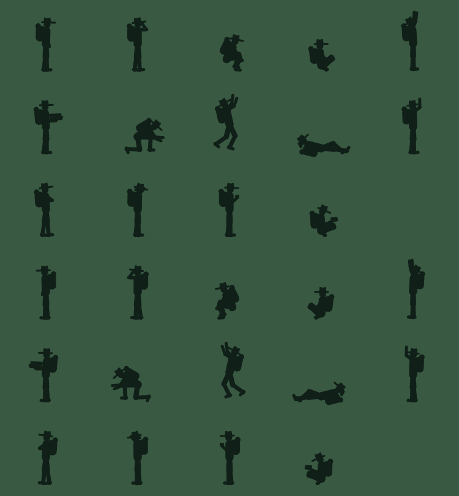
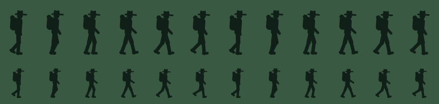
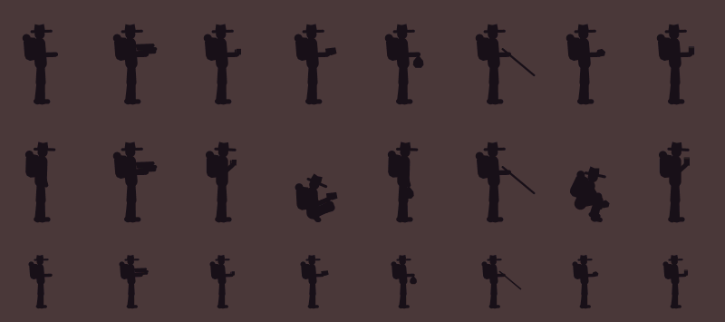
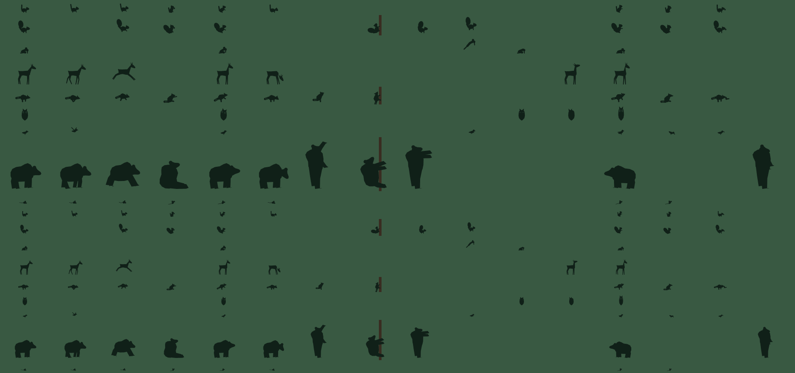
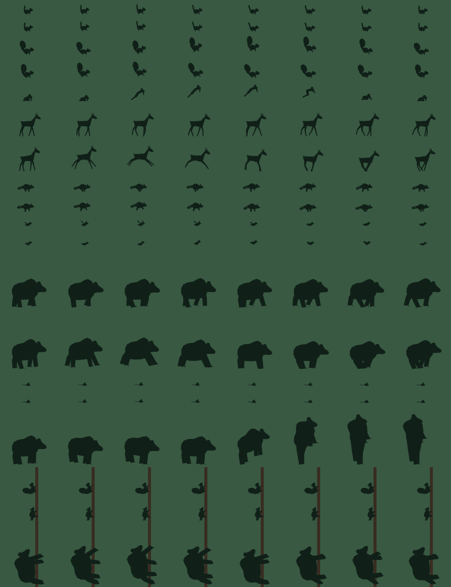

<title>Campsite Animation Review</title>
<meta name="claude:viewport-fit-sides" content="cover">
<link rel="preconnect" href="https://fonts.googleapis.com">
<link rel="preconnect" href="https://fonts.gstatic.com" crossorigin>
<link rel="stylesheet" href="https://fonts.googleapis.com/css2?family=Big+Shoulders+Display:wght@600;800&family=Atkinson+Hyperlegible:ital,wght@0,400;0,700;1,400&family=JetBrains+Mono:wght@400;600&display=swap">
<style>
/* Layout: a reading column for the words, full-width clip grids for the pictures; palette from the screensaver itself. */
:root {
  --bg: #f1f4f1; --surface: #ffffff; --fg: #1d2827; --muted: #56645f; --rule: #d3dbd5;
  --accent: #b5532a; --forest: #2c5a43; --stream: #2f7f8a; --night: #1b2a3c;
  --code-bg: #e6ebe7; --tag-beat: #2c5a43; --tag-filler: #2f7f8a; --tag-major: #b5532a; --tag-minor: #6b5b95;
  --font-display: "Big Shoulders Display", "Arial Narrow", "Helvetica Neue", sans-serif;
  --font-body: "Atkinson Hyperlegible", "Segoe UI", system-ui, sans-serif;
  --font-mono: "JetBrains Mono", ui-monospace, "Cascadia Mono", Consolas, monospace;
  --col: 46rem; --wide: 78rem;
}
@media (prefers-color-scheme: dark) {
  :root:not([data-theme="light"]) {
    --bg: #111922; --surface: #17222d; --fg: #e4ebe7; --muted: #9caba6; --rule: #273541;
    --accent: #f0a05c; --forest: #86c1a0; --stream: #7fcbd4; --night: #c9d6e6; --code-bg: #1d2a36;
    --tag-beat: #86c1a0; --tag-filler: #7fcbd4; --tag-major: #f0a05c; --tag-minor: #b9a9e6; color-scheme: dark;
  }
}
:root[data-theme="dark"] {
  --bg: #111922; --surface: #17222d; --fg: #e4ebe7; --muted: #9caba6; --rule: #273541;
  --accent: #f0a05c; --forest: #86c1a0; --stream: #7fcbd4; --night: #c9d6e6; --code-bg: #1d2a36;
  --tag-beat: #86c1a0; --tag-filler: #7fcbd4; --tag-major: #f0a05c; --tag-minor: #b9a9e6; color-scheme: dark;
}
* { box-sizing: border-box; }
body { background: var(--bg); color: var(--fg); font-family: var(--font-body); font-size: 1.0625rem; line-height: 1.6;
  padding-left: max(16px, env(safe-area-inset-left, 0px)); padding-right: max(16px, env(safe-area-inset-right, 0px)); padding-block: 2.5rem 4rem; }
main { display: grid; gap: 3.5rem; }
.col { width: 100%; max-width: var(--col); margin-inline: auto; min-width: 0; display: grid; gap: 1rem; }
.wide { width: 100%; max-width: var(--wide); margin-inline: auto; min-width: 0; display: grid; gap: 1.2rem; }
h1, h2, h3, h4 { font-family: var(--font-display); text-wrap: balance; line-height: 1.05; margin: 0; }
h1 { font-size: clamp(2.6rem, 7vw, 4.4rem); font-weight: 800; text-transform: uppercase; letter-spacing: 0.01em; }
h1 span { color: var(--accent); }
h2 { font-size: clamp(1.8rem, 4vw, 2.4rem); font-weight: 800; text-transform: uppercase; letter-spacing: 0.02em; color: var(--forest); }
h3 { font-size: 1.35rem; font-weight: 600; text-transform: uppercase; letter-spacing: 0.04em; }
h4 { font-size: 1.1rem; font-weight: 800; letter-spacing: 0.02em; }
p { margin: 0; }
a { color: var(--stream); text-underline-offset: 2px; }
a:focus-visible, video:focus-visible, button:focus-visible, summary:focus-visible { outline: 3px solid var(--accent); outline-offset: 2px; }
code { font-family: var(--font-mono); font-size: 0.86em; background: var(--code-bg); padding: 0.1em 0.35em; border-radius: 3px; overflow-wrap: anywhere; }
pre { font-family: var(--font-mono); font-size: 0.82rem; background: var(--code-bg); padding: 0.8rem 1rem; border-radius: 6px; overflow-x: auto; margin: 0; line-height: 1.5; }
.eyebrow { font-family: var(--font-mono); font-size: 0.78rem; text-transform: uppercase; letter-spacing: 0.12em; color: var(--muted); }
.lede { font-size: 1.2rem; }
.muted { color: var(--muted); } .small { font-size: 0.92rem; }
ul.plain, ol.plain { margin: 0; padding-left: 1.2rem; display: grid; gap: 0.5rem; }

/* Tags */
.tag { display: inline-block; font-family: var(--font-mono); font-size: 0.7rem; font-weight: 600; text-transform: uppercase; letter-spacing: 0.08em; padding: 0.12em 0.5em; border-radius: 999px; border: 1.5px solid currentColor; vertical-align: 0.15em; }
.tag.beat { color: var(--tag-beat); } .tag.filler { color: var(--tag-filler); } .tag.major { color: var(--tag-major); } .tag.minor { color: var(--tag-minor); }

/* Hero */
.frame { border-radius: 6px; overflow: hidden; background: #0d141b; aspect-ratio: 5 / 3; max-width: 100%; }
.frame img, .frame video { display: block; width: 100%; height: 100%; object-fit: cover; }
figure { margin: 0; display: grid; gap: 0.5rem; min-width: 0; }
figcaption { font-size: 0.9rem; color: var(--muted); }

/* Judge list */
.judge { display: grid; grid-template-columns: repeat(auto-fit, minmax(14rem, 1fr)); gap: 1px; background: var(--rule); border: 1px solid var(--rule); border-radius: 6px; overflow: hidden; }
.judge > div { background: var(--surface); padding: 1rem 1.1rem; display: grid; gap: 0.3rem; align-content: start; }
.judge .q { font-family: var(--font-display); font-weight: 800; font-size: 1.3rem; line-height: 1.1; }
.judge .d { font-size: 0.92rem; color: var(--muted); }

/* Loop timeline */
.timeline { display: flex; flex-wrap: wrap; gap: 4px; align-items: stretch; }
.timeline .seg { display: grid; gap: 0.15rem; padding: 0.5rem 0.6rem; border-radius: 4px; background: var(--surface); border: 1.5px solid var(--rule); min-width: 0; flex: 1 1 5.5rem; }
.timeline .seg b { font-family: var(--font-display); font-weight: 800; font-size: 1.05rem; letter-spacing: 0.02em; }
.timeline .seg span { font-size: 0.78rem; color: var(--muted); line-height: 1.3; }
.timeline .seg.beat { border-color: var(--tag-beat); } .timeline .seg.filler { border-color: var(--tag-filler); border-style: dashed; }
.timeline .seg.major { border-color: var(--tag-major); border-style: dashed; } .timeline .seg.pause { opacity: 0.75; flex-basis: 3.6rem; }

/* Clip cards */
.cards { display: grid; grid-template-columns: repeat(auto-fill, minmax(19rem, 1fr)); gap: 1.1rem; }
.card { background: var(--surface); border: 1px solid var(--rule); border-radius: 6px; overflow: hidden; display: grid; grid-template-rows: auto 1fr; min-width: 0; }
.card .frame { border-radius: 0; }
.card .body { padding: 0.8rem 0.95rem 0.95rem; display: grid; gap: 0.35rem; align-content: start; }
.card .name { display: flex; gap: 0.5rem; align-items: baseline; flex-wrap: wrap; }
.card .name b { font-family: var(--font-display); font-weight: 800; font-size: 1.25rem; letter-spacing: 0.02em; }
.card .meta { font-family: var(--font-mono); font-size: 0.72rem; color: var(--muted); letter-spacing: 0.04em; }
.card p { font-size: 0.93rem; }
.card.missing .frame { display: grid; place-items: center; background: var(--code-bg); color: var(--muted); font-family: var(--font-mono); font-size: 0.8rem; }
.beat-group { display: grid; gap: 0.8rem; }
.beat-group .head { display: grid; gap: 0.25rem; }
.sheet { background: var(--surface); border: 1px solid var(--rule); border-radius: 6px; padding: 0.5rem; }
.sheet img { display: block; width: 100%; height: auto; image-rendering: auto; }
.grid2 { display: grid; grid-template-columns: repeat(2, minmax(0, 1fr)); gap: 1.2rem; }
@media (max-width: 720px) { .grid2 { grid-template-columns: 1fr; } }

/* Tables */
.table-wrap { overflow-x: auto; border: 1px solid var(--rule); border-radius: 6px; background: var(--surface); }
table { border-collapse: collapse; width: 100%; font-size: 0.9rem; font-variant-numeric: tabular-nums; }
th, td { text-align: left; padding: 0.5rem 0.75rem; border-bottom: 1px solid var(--rule); vertical-align: top; }
tr:last-child td { border-bottom: none; }
th { font-family: var(--font-mono); font-size: 0.72rem; text-transform: uppercase; letter-spacing: 0.08em; color: var(--muted); font-weight: 600; background: var(--bg); position: sticky; top: 0; }
td.v { font-family: var(--font-mono); font-size: 0.82rem; }
.callout { border-left: 4px solid var(--accent); background: var(--surface); padding: 1rem 1.2rem; border-radius: 0 6px 6px 0; display: grid; gap: 0.5rem; }
details { border: 1px solid var(--rule); border-radius: 6px; background: var(--surface); padding: 0.6rem 1rem; }
summary { cursor: pointer; font-weight: 700; }
.controls { display: flex; gap: 0.6rem; flex-wrap: wrap; align-items: center; }
button { font: inherit; font-size: 0.9rem; padding: 0.4rem 0.9rem; border-radius: 999px; border: 1.5px solid var(--rule); background: var(--surface); color: var(--fg); cursor: pointer; }
button:hover { border-color: var(--accent); }
footer { color: var(--muted); font-size: 0.88rem; }
@media (prefers-reduced-motion: reduce) { * { scroll-behavior: auto !important; } }
</style>

<main>

<header class="wide">
  <div class="col" style="max-width: var(--wide)">
    <div class="eyebrow">TComm · campsite screensaver · stages 2 to 6 review · for Mark and Mike</div>
    <h1>Every scene, <span>every variation</span></h1>
    <p class="lede">The whole animation now plays in the PC preview: the valley builds itself, the hiker arrives and makes camp, animals come and go, surprises land, the night falls and the loop restarts somewhere new. This page holds a clip of every beat, filler, surprise and small moment, with each variant side by side, plus the evidence that no two loops are alike. Watch, then say what works and what doesn't before anything goes near the panel.</p>
  </div>
  <figure>
    <div class="frame"><video id="hero" src="clips/loop_overview.mp4" poster="clips/loop_overview.png" muted loop playsinline controls preload="metadata" aria-label="One whole loop at eight times speed"></video></div>
    <figcaption>One whole loop at eight times speed (about 80 seconds for a ten-minute loop). Golden hour, seed 1. Every other clip on this page plays at real speed.</figcaption>
  </figure>
</header>

<section class="col" aria-labelledby="judge">
  <h2 id="judge">What to judge</h2>
  <div class="judge">
    <div><span class="q">Is it calm?</span><span class="d">Long stretches should have only grass, water, clouds and fire moving. If it ever feels busy, say where.</span></div>
    <div><span class="q">Does the hiker read?</span><span class="d">Hat, pack and posture at 90 px. Does each pose say what it means without words?</span></div>
    <div><span class="q">Are the gags funny?</span><span class="d">Pixar-short tone: warm, a little silly, never mean. Which ones land, which fall flat.</span></div>
    <div><span class="q">Do you feel a clock?</span><span class="d">Gaps between surprises are randomized. If the rhythm feels mechanical, that's a finding.</span></div>
    <div><span class="q">Do loops differ enough?</span><span class="d">The table at the end shows ten consecutive loops. Would you notice the repeats?</span></div>
    <div><span class="q">What's missing?</span><span class="d">Ideas from the brief not built yet are listed at the end. Add yours.</span></div>
  </div>
  <p class="small muted">Clips are 640 px wide to keep the page light; the panel shows the same scene at 800×480. Colors are the PC preview's and will need tuning on the real screen. Nothing here has run on the ESP32 yet.</p>
</section>

<section class="wide" aria-labelledby="shape">
  <div class="col" style="max-width: var(--col)">
    <h2 id="shape">The shape of a loop</h2>
    <p>Every loop runs the story spine in order. Between spine beats come pauses with only the ambient layer moving, calm fillers, and two to four surprise majors with a beat of stillness on each side. Small "minor" moments fire every ten to thirty seconds during any calm stretch. A loop is 8 to 11 minutes and ends with the tent light going out and a fade to black; the next loop builds a new valley from a new seed.</p>
  </div>
  <div class="timeline" role="img" aria-label="Loop timeline: build, arrival, setup, firewood, fire, dinner, food bag, bear, close, with pauses, fillers and majors between">
    <div class="seg beat"><b>Build</b><span>13 s. Valley assembles itself</span></div>
    <div class="seg beat"><b>Arrival</b><span>25–33 s · 3 variants</span></div>
    <div class="seg pause"><b>Pause</b><span>8–20 s</span></div>
    <div class="seg beat"><b>Setup</b><span>35–46 s · 3 variants</span></div>
    <div class="seg major"><b>Major?</b><span>still · major · still</span></div>
    <div class="seg beat"><b>Firewood</b><span>34–62 s · 3 variants</span></div>
    <div class="seg beat"><b>Fire</b><span>31–43 s · 3 variants</span></div>
    <div class="seg filler"><b>Filler</b><span>30–60 s · from a pool of 6</span></div>
    <div class="seg major"><b>Major?</b><span>still · major · still</span></div>
    <div class="seg beat"><b>Dinner</b><span>33–48 s · 3 variants</span></div>
    <div class="seg filler"><b>Filler</b><span>30–60 s</span></div>
    <div class="seg major"><b>Major?</b><span>still · major · still</span></div>
    <div class="seg beat"><b>Food bag</b><span>38–48 s · 3 variants</span></div>
    <div class="seg major"><b>Major?</b><span>in the lit tent</span></div>
    <div class="seg beat"><b>Bear</b><span>42–76 s · 3 variants</span></div>
    <div class="seg beat"><b>Close</b><span>34–50 s · 3 variants · fade</span></div>
  </div>
  <p class="small muted col" style="max-width: var(--col)">Minors (the chipmunk crossing, a falling leaf, a bee) can fire in any pause or filler. The planner trims pauses and fillers so the loop lands between 490 and 650 seconds.</p>
</section>

<section class="wide" aria-labelledby="opening">
  <div class="col" style="max-width: var(--col)">
    <h2 id="opening">The opening and the ambient layer</h2>
    <p>Each loop starts from black. The sky fades in, the ridges rise, the trees stand up with a little overshoot, the stream rolls in from the right, the plants pop up with the mushroom last, and the fire pit's stones are laid. After that, the ambient layer never stops: grass sways, highlights drift down the stream, clouds pass, smoke rises, a bird crosses now and then. The second clip is a stretch with nothing scheduled, which is what most of the screensaver's life looks like.</p>
  </div>
  <div class="cards" id="cards-opening"></div>
</section>

<section class="wide" aria-labelledby="hiker">
  <div class="col" style="max-width: var(--col)">
    <h2 id="hiker">The hiker</h2>
    <p>A jointed silhouette about 90 px tall, built from capsules. The brimmed hat and the tall pack are the two shapes that must read at any size. Fourteen poses, blended with a small anticipation before actions and an overshoot-and-settle on landings; a procedural walk with the pack bouncing out of phase with the hat; slow breathing when idle. The sheets below come straight from the test program.</p>
  </div>
  <div class="grid2">
    <figure><div class="sheet"></div><figcaption>All poses, day palette: stand, look around, crouch, sit, reach up, carry, blow, yelp, lie, wave, hands on hips, scratch head, hold mug, read. Second row mirrored.</figcaption></figure>
    <figure><div class="sheet"></div><figcaption>One walk cycle in twelve frames, at 90 px and at 60 px.</figcaption></figure>
  </div>
  <figure><div class="sheet"></div><figcaption>Carried items: wood, mug, book, bag, stick, rock, jar. Rows: facing right, facing left with the fire rim light, and at 60 px.</figcaption></figure>
</section>

<section class="wide" aria-labelledby="spine">
  <div class="col" style="max-width: var(--col)">
    <h2 id="spine">The story spine</h2>
    <p>Eight beats, each with three variants. The loop picks one variant per beat from its seed. Variants of the same beat are shown together so you can compare them. Durations are the beat's slot; the action finishes a few seconds early so every beat ends at rest.</p>
  </div>
  <div id="spine-groups" style="display:grid; gap: 2.2rem;"></div>
</section>

<section class="wide" aria-labelledby="fillers">
  <div class="col" style="max-width: var(--col)">
    <h2 id="fillers">Calm fillers <span class="tag filler">filler</span></h2>
    <p>Quiet, appreciative beats from the brief's "calm moments" pool. Two to four per loop, no repeats within a loop, placed in the pauses after the fire and dinner (and after setup when there are four). The mug at sunset is favored late in the day. The cairn is remembered: next loop it is still there, one stone shorter, and he builds on it.</p>
  </div>
  <div class="cards" id="cards-fillers"></div>
</section>

<section class="wide" aria-labelledby="critters">
  <div class="col" style="max-width: var(--col)">
    <h2 id="critters">The critters</h2>
    <p>Nine animals, 8 to 60 px, four to seven shapes each with one unmistakable feature: the squirrel's tail, the raccoon's rings, the owl's eye discs, the deer's legs and ears, the bear's hump. Each has a handful of actions (idle, move, hop, climb, sit, sniff, reach, rear, startle, shake, eat, carry, blink, head turn) and a personality dial per loop that changes its speed and fidget. They scatter when the hiker walks toward them; shy ones bolt at any move.</p>
  </div>
  <figure><div class="sheet"></div><figcaption>Rows: chipmunk, squirrel, frog, deer, raccoon, owl, bird, bear, mouse. Columns: idle, move, run, sit, look, sniff, reach, climb, shake, hop, blink, head turn, startle, eat, carry, rear. Lower half at 0.7 scale.</figcaption></figure>
  <figure><div class="sheet"></div><figcaption>Gaits in eight phases; the bear's rear and climb at the right.</figcaption></figure>
</section>

<section class="wide" aria-labelledby="minors">
  <div class="col" style="max-width: var(--col)">
    <h2 id="minors">Small moments <span class="tag minor">minor</span></h2>
    <p>Rewards for anyone glancing at the screen. One fires every 10 to 30 seconds during calm stretches, from a weighted pool that remembers its last six picks, never while the hiker walks or another scene owns the animals. Each is under 25 seconds and uses at most two critters. About twenty happen per loop.</p>
  </div>
  <div class="cards" id="cards-minors"></div>
</section>

<section class="wide" aria-labelledby="majors">
  <div class="col" style="max-width: var(--col)">
    <h2 id="majors">Surprises <span class="tag major">major</span></h2>
    <p>The memorable moments. Two to four per loop, placed in the gaps after setup, fire, dinner, and (for the shadow theater) once he's in the lit tent, each between two still beats of 4 to 8 seconds. The planner weighs each one down by how recently it played, excludes last loop's picks entirely, and refuses any set of majors played in the last nine loops. Two depend on the time of day: fireflies need dusk or night, stargazing needs night.</p>
  </div>
  <div class="cards" id="cards-majors"></div>
</section>

<section class="wide" aria-labelledby="random">
  <div class="col" style="max-width: var(--col)">
    <h2 id="random">Randomness and memory</h2>
    <p>A loop is fully determined by its seed, so anything you see can be replayed exactly. Each loop's seed comes from the previous loop's random stream. Below: ten consecutive loops from one starting seed, exactly as the preview's <code>--loops 10</code> prints them. Read across a row for one loop's picks; read down a column to see the variety.</p>
  </div>
  <div class="table-wrap"><table id="loops-table"><thead><tr><th>Loop</th><th>Length</th><th>Arrival</th><th>Setup</th><th>Firewood</th><th>Fire</th><th>Dinner</th><th>Food bag</th><th>Bear</th><th>Close</th><th>Fillers</th><th>Majors</th><th>Memory after</th></tr></thead><tbody></tbody></table></div>
  <div class="col" style="max-width: var(--col)">
    <h3>What varies, and how</h3>
    <ul class="plain">
      <li><b>The valley.</b> Ridge shapes, tree lines, rocks, tufts, cloud shapes, stream ripples: all from the seed.</li>
      <li><b>Spine variants.</b> One of three per beat, with the bear's choice of tactic also depending on what is near the tree (a fallen branch, or the stick he dragged in).</li>
      <li><b>Fillers and majors.</b> Weighted picks with ring buffers; last loop's majors are excluded; mood gates the night ones.</li>
      <li><b>Timing.</b> Every pause, every gap between minors, every beat's sub-timing jitters within bounds.</li>
      <li><b>Personality.</b> Each critter kind is brave or shy for two loops at a time, which changes how close it comes and how fast it bolts.</li>
      <li><b>Memory across loops.</b> The cairn comes back one stone shorter. If the raccoon stole his shoe, next time it brings the shoe back and takes the mug or the book instead. If mice visited the tent twice, next loop the tent has a hole until he patches it during setup.</li>
    </ul>
    <p class="small muted">Test in the repo: ten consecutive loops from one seed never share the same set of spine variants and majors; every major fires within thirty loops; no two consecutive loops repeat a major.</p>
  </div>
</section>

<section class="col" aria-labelledby="numbers">
  <h2 id="numbers">Numbers and budget</h2>
  <p>The panel is unmeasured, so every stage reports against a proposed budget. These are the PC numbers for the finished stage 6 build; the first board run replaces the budget with real figures.</p>
  <div class="table-wrap"><table>
    <thead><tr><th>Measure</th><th>Budget</th><th>Now</th></tr></thead>
    <tbody>
      <tr><td>Strips redrawn per frame, whole loop average (of 15)</td><td>≤ 8</td><td class="v">7.5 to 7.7</td></tr>
      <tr><td>Strips per frame, bear beat (busiest)</td><td>≤ 10</td><td class="v">8.1 to 9.1</td></tr>
      <tr><td>PC frame time, whole loop (Apple Silicon)</td><td>≤ 2 ms</td><td class="v">0.10 to 0.12 ms</td></tr>
      <tr><td><code>sizeof(App)</code> (must sit in internal SRAM)</td><td>≤ 96 KB</td><td class="v">66,048 B</td></tr>
      <tr><td>Static cache rebuilds per loop</td><td>few</td><td class="v">6 (build phases) + palette changes</td></tr>
      <tr><td>Beats in the timeline (worst case)</td><td>≤ 64</td><td class="v">36</td></tr>
      <tr><td>Tests</td><td>all pass</td><td class="v">6 suites, incl. determinism, quiet corner, variety</td></tr>
    </tbody>
  </table></div>
  <p class="small muted">Determinism is tested within one compiler and defended across compilers by rules (one random call per statement, table sines, single precision). Bit-for-bit agreement between the PC and the ESP32 is still unverified.</p>
</section>

<section class="col" aria-labelledby="open">
  <h2 id="open">Not built yet, and known rough edges</h2>
  <ul class="plain">
    <li><b>From the brief, waiting on later stages:</b> weather effects and the rain shelter scene (stage 9), the Lookout sunset scene (stage 10), the status chip, doorbell reaction and touch reveal (stage 8), sound (stage 11).</li>
    <li><b>From the idea pools, not yet made:</b> the morning spine (wake in fog, coffee, break camp), the sock on the frog, the log crossing, the collapsing chair, the burrs on socks, wishing on a meteor, poison ivy, the mushroom house with a snail, the ants on the sandwich, the bathroom-break raids.</li>
    <li><b>Palette:</b> the actor rim light and the owl's eyes barely show in some moods; the mushroom cap is bright at night; the pine is near black at golden hour so the climbing bear shows mostly where it sticks out against the sky. All one-table fixes, best done on the real screen.</li>
    <li><b>Timing:</b> the food bag beat runs 38 to 48 s because the pack, the tree and the tent are far apart; bear variant c runs to 76 s when it fetches the stick from beside the fire.</li>
    <li><b>Scene:</b> the pine doesn't shake when the bear shakes it (it lives in the static cache); the leaf falls from the top of the frame rather than from a tree; the echo squirrel sits on a rock because there's no stump.</li>
  </ul>
</section>

<section class="col" aria-labelledby="repro">
  <h2 id="repro">Reproduce any clip</h2>
  <p>Everything on this page was cut by <code>screensaver/tools/review_clips.py</code> from the headless preview. To see one loop live, build <code>ss_window</code> and use the keys in <code>screensaver/README.md</code>. To re-cut these clips:</p>
<pre>cd screensaver/build && cmake .. && cmake --build . -j8 && ctest
python3 -I ../tools/review_clips.py --preview ./ss_preview --out ../../docs/screensaver/reviews/stages2-6 \
    --seeds 1-16 --mood 4 --every 2 --max-seconds 60 --loops-overview
python3 -I ../tools/review_clips.py --preview ./ss_preview --out ../../docs/screensaver/reviews/stages2-6 \
    --seeds 1-10 --night --every 2 --max-seconds 60
./ss_preview --seed 1 --mood 4 --loops 10</pre>
  <p class="small muted">A clip's seed and start tick are in <code>manifest.json</code> next to this page; <code>--seed S --skip T</code> puts the preview at that exact moment.</p>
</section>

<footer class="col">Stages 2 to 6 built 30 October 2026 in the PC preview, on the <code>screensaver</code> branch. Clips are real preview output. Stage 7 (the panel) waits on this review.</footer>

</main>

<script id="manifest" type="application/json">{"clips":[{"name":"build","beat":"build","kind":"beat","variant":null,"seed":1,"start_tick":0,"seconds":12.96,"mood":4.0,"night":false,"file":"clips/build.mp4","poster":"clips/build.png","bytes":44638},{"name":"arrival_c","beat":"arrival","kind":"beat","variant":"c","seed":1,"start_tick":325,"seconds":32.96,"mood":4.0,"night":false,"file":"clips/arrival_c.mp4","poster":"clips/arrival_c.png","bytes":89384},{"name":"setup_b","beat":"setup","kind":"beat","variant":"b","seed":1,"start_tick":1375,"seconds":38.96,"mood":4.0,"night":false,"file":"clips/setup_b.mp4","poster":"clips/setup_b.png","bytes":91483},{"name":"still","beat":"still","kind":"beat","variant":null,"seed":1,"start_tick":2550,"seconds":4.0,"mood":4.0,"night":false,"file":"clips/still.mp4","poster":"clips/still.png","bytes":20226},{"name":"pinecone","beat":"pinecone","kind":"major","variant":null,"seed":1,"start_tick":2650,"seconds":30.0,"mood":4.0,"night":false,"file":"clips/pinecone.mp4","poster":"clips/pinecone.png","bytes":74541},{"name":"firewood_b","beat":"firewood","kind":"beat","variant":"b","seed":1,"start_tick":3600,"seconds":60.0,"mood":4.0,"night":false,"file":"clips/firewood_b.mp4","poster":"clips/firewood_b.png","bytes":145759},{"name":"fire_a","beat":"fire","kind":"beat","variant":"a","seed":1,"start_tick":5350,"seconds":31.04,"mood":4.0,"night":false,"file":"clips/fire_a.mp4","poster":"clips/fire_a.png","bytes":90203},{"name":"cloud_watch","beat":"cloud_watch","kind":"filler","variant":null,"seed":1,"start_tick":6525,"seconds":58.0,"mood":4.0,"night":false,"file":"clips/cloud_watch.mp4","poster":"clips/cloud_watch.png","bytes":175215},{"name":"dinner_a","beat":"dinner","kind":"beat","variant":"a","seed":1,"start_tick":8425,"seconds":38.0,"mood":4.0,"night":false,"file":"clips/dinner_a.mp4","poster":"clips/dinner_a.png","bytes":117137},{"name":"stream_listen","beat":"stream_listen","kind":"filler","variant":null,"seed":1,"start_tick":9750,"seconds":46.0,"mood":4.0,"night":false,"file":"clips/stream_listen.mp4","poster":"clips/stream_listen.png","bytes":138899},{"name":"map_chase","beat":"map_chase","kind":"major","variant":null,"seed":1,"start_tick":11450,"seconds":43.04,"mood":4.0,"night":false,"file":"clips/map_chase.mp4","poster":"clips/map_chase.png","bytes":161226},{"name":"foodbag_a","beat":"foodbag","kind":"beat","variant":"a","seed":1,"start_tick":12625,"seconds":38.0,"mood":4.0,"night":false,"file":"clips/foodbag_a.mp4","poster":"clips/foodbag_a.png","bytes":130458},{"name":"bear_b","beat":"bear","kind":"beat","variant":"b","seed":1,"start_tick":13925,"seconds":42.0,"mood":4.0,"night":false,"file":"clips/bear_b.mp4","poster":"clips/bear_b.png","bytes":140217},{"name":"close_a","beat":"close","kind":"beat","variant":"a","seed":1,"start_tick":15400,"seconds":34.0,"mood":4.0,"night":false,"file":"clips/close_a.mp4","poster":"clips/close_a.png","bytes":98602},{"name":"minor_squirrel_nut","beat":"squirrel_nut","kind":"minor","variant":null,"seed":1,"start_tick":509,"seconds":22.0,"mood":4.0,"night":false,"file":"clips/minor_squirrel_nut.mp4","poster":"clips/minor_squirrel_nut.png","bytes":69852},{"name":"minor_frog_splash","beat":"frog_splash","kind":"minor","variant":null,"seed":1,"start_tick":1300,"seconds":22.0,"mood":4.0,"night":false,"file":"clips/minor_frog_splash.mp4","poster":"clips/minor_frog_splash.png","bytes":63479},{"name":"minor_leaf_fall","beat":"leaf_fall","kind":"minor","variant":null,"seed":1,"start_tick":1821,"seconds":22.0,"mood":4.0,"night":false,"file":"clips/minor_leaf_fall.mp4","poster":"clips/minor_leaf_fall.png","bytes":61033},{"name":"minor_deer_edge","beat":"deer_edge","kind":"minor","variant":null,"seed":1,"start_tick":2270,"seconds":22.0,"mood":4.0,"night":false,"file":"clips/minor_deer_edge.mp4","poster":"clips/minor_deer_edge.png","bytes":63148},{"name":"minor_chipmunk_cross","beat":"chipmunk_cross","kind":"minor","variant":null,"seed":1,"start_tick":3878,"seconds":22.0,"mood":4.0,"night":false,"file":"clips/minor_chipmunk_cross.mp4","poster":"clips/minor_chipmunk_cross.png","bytes":64290},{"name":"minor_cloud_animal","beat":"cloud_animal","kind":"minor","variant":null,"seed":1,"start_tick":4565,"seconds":22.0,"mood":4.0,"night":false,"file":"clips/minor_cloud_animal.mp4","poster":"clips/minor_cloud_animal.png","bytes":64221},{"name":"minor_bee_visit","beat":"bee_visit","kind":"minor","variant":null,"seed":1,"start_tick":5046,"seconds":22.0,"mood":4.0,"night":false,"file":"clips/minor_bee_visit.mp4","poster":"clips/minor_bee_visit.png","bytes":58056},{"name":"minor_bird_chip","beat":"bird_chip","kind":"minor","variant":null,"seed":1,"start_tick":5771,"seconds":22.0,"mood":4.0,"night":false,"file":"clips/minor_bird_chip.mp4","poster":"clips/minor_bird_chip.png","bytes":71986},{"name":"minor_mouse_tent","beat":"mouse_tent","kind":"minor","variant":null,"seed":1,"start_tick":6950,"seconds":22.0,"mood":4.0,"night":false,"file":"clips/minor_mouse_tent.mp4","poster":"clips/minor_mouse_tent.png","bytes":70617},{"name":"arrival_a","beat":"arrival","kind":"beat","variant":"a","seed":2,"start_tick":325,"seconds":24.96,"mood":4.0,"night":false,"file":"clips/arrival_a.mp4","poster":"clips/arrival_a.png","bytes":68518},{"name":"setup_c","beat":"setup","kind":"beat","variant":"c","seed":2,"start_tick":1150,"seconds":35.04,"mood":4.0,"night":false,"file":"clips/setup_c.mp4","poster":"clips/setup_c.png","bytes":95379},{"name":"fish_leap","beat":"fish_leap","kind":"major","variant":null,"seed":2,"start_tick":2425,"seconds":22.96,"mood":4.0,"night":false,"file":"clips/fish_leap.mp4","poster":"clips/fish_leap.png","bytes":60988},{"name":"read","beat":"read","kind":"filler","variant":null,"seed":2,"start_tick":5925,"seconds":50.0,"mood":4.0,"night":false,"file":"clips/read.mp4","poster":"clips/read.png","bytes":160656},{"name":"dinner_c","beat":"dinner","kind":"beat","variant":"c","seed":2,"start_tick":7375,"seconds":32.96,"mood":4.0,"night":false,"file":"clips/dinner_c.mp4","poster":"clips/dinner_c.png","bytes":114568},{"name":"mug_sunset","beat":"mug_sunset","kind":"filler","variant":null,"seed":2,"start_tick":8400,"seconds":47.04,"mood":4.0,"night":false,"file":"clips/mug_sunset.mp4","poster":"clips/mug_sunset.png","bytes":154152},{"name":"foodbag_c","beat":"foodbag","kind":"beat","variant":"c","seed":2,"start_tick":11450,"seconds":47.04,"mood":4.0,"night":false,"file":"clips/foodbag_c.mp4","poster":"clips/foodbag_c.png","bytes":167925},{"name":"bear_a","beat":"bear","kind":"beat","variant":"a","seed":2,"start_tick":12825,"seconds":58.0,"mood":4.0,"night":false,"file":"clips/bear_a.mp4","poster":"clips/bear_a.png","bytes":179420},{"name":"close_b","beat":"close","kind":"beat","variant":"b","seed":2,"start_tick":14475,"seconds":50.0,"mood":4.0,"night":false,"file":"clips/close_b.mp4","poster":"clips/close_b.png","bytes":154399},{"name":"arrival_b","beat":"arrival","kind":"beat","variant":"b","seed":3,"start_tick":325,"seconds":28.96,"mood":4.0,"night":false,"file":"clips/arrival_b.mp4","poster":"clips/arrival_b.png","bytes":73863},{"name":"squirrel_splash","beat":"squirrel_splash","kind":"major","variant":null,"seed":3,"start_tick":2475,"seconds":30.96,"mood":4.0,"night":false,"file":"clips/squirrel_splash.mp4","poster":"clips/squirrel_splash.png","bytes":85784},{"name":"firewood_a","beat":"firewood","kind":"beat","variant":"a","seed":3,"start_tick":3450,"seconds":34.0,"mood":4.0,"night":false,"file":"clips/firewood_a.mp4","poster":"clips/firewood_a.png","bytes":83821},{"name":"echo","beat":"echo","kind":"major","variant":null,"seed":3,"start_tick":5650,"seconds":34.0,"mood":4.0,"night":false,"file":"clips/echo.mp4","poster":"clips/echo.png","bytes":107999},{"name":"skip_stone","beat":"skip_stone","kind":"filler","variant":null,"seed":3,"start_tick":7675,"seconds":36.0,"mood":4.0,"night":false,"file":"clips/skip_stone.mp4","poster":"clips/skip_stone.png","bytes":115246},{"name":"deer_stick","beat":"deer_stick","kind":"major","variant":null,"seed":3,"start_tick":8975,"seconds":42.0,"mood":4.0,"night":false,"file":"clips/deer_stick.mp4","poster":"clips/deer_stick.png","bytes":136638},{"name":"foodbag_b","beat":"foodbag","kind":"beat","variant":"b","seed":3,"start_tick":10225,"seconds":48.0,"mood":4.0,"night":false,"file":"clips/foodbag_b.mp4","poster":"clips/foodbag_b.png","bytes":172809},{"name":"shadow_theater","beat":"shadow_theater","kind":"major","variant":null,"seed":3,"start_tick":11725,"seconds":44.0,"mood":4.0,"night":false,"file":"clips/shadow_theater.mp4","poster":"clips/shadow_theater.png","bytes":149485},{"name":"close_c","beat":"close","kind":"beat","variant":"c","seed":3,"start_tick":14650,"seconds":37.04,"mood":4.0,"night":false,"file":"clips/close_c.mp4","poster":"clips/close_c.png","bytes":105174},{"name":"setup_a","beat":"setup","kind":"beat","variant":"a","seed":4,"start_tick":1150,"seconds":39.04,"mood":4.0,"night":false,"file":"clips/setup_a.mp4","poster":"clips/setup_a.png","bytes":97471},{"name":"ranger_ridge","beat":"ranger_ridge","kind":"major","variant":null,"seed":4,"start_tick":10950,"seconds":32.0,"mood":4.0,"night":false,"file":"clips/ranger_ridge.mp4","poster":"clips/ranger_ridge.png","bytes":89458},{"name":"bear_c","beat":"bear","kind":"beat","variant":"c","seed":4,"start_tick":13250,"seconds":59.04,"mood":4.0,"night":false,"file":"clips/bear_c.mp4","poster":"clips/bear_c.png","bytes":188535},{"name":"fishing_good","beat":"fishing_good","kind":"major","variant":null,"seed":5,"start_tick":5925,"seconds":50.0,"mood":4.0,"night":false,"file":"clips/fishing_good.mp4","poster":"clips/fishing_good.png","bytes":172296},{"name":"dinner_d","beat":"dinner","kind":"beat","variant":"d","seed":5,"start_tick":7325,"seconds":34.0,"mood":4.0,"night":false,"file":"clips/dinner_d.mp4","poster":"clips/dinner_d.png","bytes":107405},{"name":"birds_on_water","beat":"birds_on_water","kind":"filler","variant":null,"seed":5,"start_tick":9875,"seconds":38.0,"mood":4.0,"night":false,"file":"clips/birds_on_water.mp4","poster":"clips/birds_on_water.png","bytes":117424},{"name":"fire_c","beat":"fire","kind":"beat","variant":"c","seed":6,"start_tick":5550,"seconds":37.04,"mood":4.0,"night":false,"file":"clips/fire_c.mp4","poster":"clips/fire_c.png","bytes":108184},{"name":"dinner_b","beat":"dinner","kind":"beat","variant":"b","seed":6,"start_tick":8000,"seconds":48.0,"mood":4.0,"night":false,"file":"clips/dinner_b.mp4","poster":"clips/dinner_b.png","bytes":159004},{"name":"cairn","beat":"cairn","kind":"filler","variant":null,"seed":7,"start_tick":9525,"seconds":54.96,"mood":4.0,"night":false,"file":"clips/cairn.mp4","poster":"clips/cairn.png","bytes":179112},{"name":"ants_cookie","beat":"ants_cookie","kind":"major","variant":null,"seed":8,"start_tick":8475,"seconds":46.0,"mood":4.0,"night":false,"file":"clips/ants_cookie.mp4","poster":"clips/ants_cookie.png","bytes":140469},{"name":"firewood_c","beat":"firewood","kind":"beat","variant":"c","seed":9,"start_tick":3950,"seconds":35.04,"mood":4.0,"night":false,"file":"clips/firewood_c.mp4","poster":"clips/firewood_c.png","bytes":89751},{"name":"fire_b","beat":"fire","kind":"beat","variant":"b","seed":14,"start_tick":4875,"seconds":42.96,"mood":4.0,"night":false,"file":"clips/fire_b.mp4","poster":"clips/fire_b.png","bytes":124627},{"name":"raccoon_pack","beat":"raccoon_pack","kind":"major","variant":null,"seed":17,"start_tick":6525,"seconds":58.0,"mood":4.0,"night":false,"file":"clips/raccoon_pack.mp4","poster":"clips/raccoon_pack.png","bytes":175090},{"name":"fishing_log","beat":"fishing_log","kind":"major","variant":null,"seed":19,"start_tick":2500,"seconds":60.0,"mood":4.0,"night":false,"file":"clips/fishing_log.mp4","poster":"clips/fishing_log.png","bytes":158315},{"name":"fishing_small","beat":"fishing_small","kind":"major","variant":null,"seed":24,"start_tick":2600,"seconds":60.0,"mood":4.0,"night":false,"file":"clips/fishing_small.mp4","poster":"clips/fishing_small.png","bytes":151165},{"name":"minor_owl_watch","beat":"owl_watch","kind":"minor","variant":null,"seed":1,"start_tick":1102,"seconds":22.0,"mood":0.0,"night":true,"file":"clips/minor_owl_watch.mp4","poster":"clips/minor_owl_watch.png","bytes":37827},{"name":"minor_moth_lantern","beat":"moth_lantern","kind":"minor","variant":null,"seed":1,"start_tick":12559,"seconds":22.0,"mood":0.0,"night":true,"file":"clips/minor_moth_lantern.mp4","poster":"clips/minor_moth_lantern.png","bytes":55798},{"name":"firefly_jar","beat":"firefly_jar","kind":"major","variant":null,"seed":3,"start_tick":8975,"seconds":42.0,"mood":0.0,"night":true,"file":"clips/firefly_jar.mp4","poster":"clips/firefly_jar.png","bytes":99796},{"name":"stargaze","beat":"stargaze","kind":"major","variant":null,"seed":8,"start_tick":2550,"seconds":51.04,"mood":0.0,"night":true,"file":"clips/stargaze.mp4","poster":"clips/stargaze.png","bytes":76519},{"name":"bathe","beat":"bathe","kind":"major","variant":null,"seed":2,"start_tick":9900,"seconds":54.0,"mood":4.0,"night":false,"file":"clips/bathe.mp4","poster":"clips/bathe.png","bytes":174231}],"plans":[{"loop_seed":1,"start_tick":0,"plan":{"arrival":2,"setup":1,"firewood":1,"fire":0,"dinner":0,"foodbag":0,"bear":1,"close":0},"fillers":["cloud_watch","stream_listen"],"majors":["pinecone","map_chase"],"memory":{},"line":"loop=0 seed=1 start tick=0 plan=arrival=2 setup=1 firewood=1 fire=0 dinner=0 foodbag=0 bear=1 close=0 fillers=cloud_watch,stream_listen majors=pinecone,map_chase","seed":1,"mood":4.0,"night":false},{"loop_seed":3,"start_tick":0,"plan":{"arrival":1,"setup":2,"firewood":0,"fire":0,"dinner":2,"foodbag":1,"bear":0,"close":2},"fillers":["skip_stone"],"majors":["squirrel_splash","echo","deer_stick","shadow_theater"],"memory":{},"line":"loop=0 seed=3 start tick=0 plan=arrival=1 setup=2 firewood=0 fire=0 dinner=2 foodbag=1 bear=0 close=2 fillers=skip_stone majors=squirrel_splash,echo,deer_stick,shadow_theater","seed":3,"mood":4.0,"night":false},{"loop_seed":4,"start_tick":0,"plan":{"arrival":0,"setup":0,"firewood":0,"fire":0,"dinner":2,"foodbag":1,"bear":2,"close":0},"fillers":["mug_sunset","read"],"majors":["pinecone","map_chase","ranger_ridge"],"memory":{},"line":"loop=0 seed=4 start tick=0 plan=arrival=0 setup=0 firewood=0 fire=0 dinner=2 foodbag=1 bear=2 close=0 fillers=mug_sunset,read majors=pinecone,map_chase,ranger_ridge","seed":4,"mood":4.0,"night":false},{"loop_seed":5,"start_tick":0,"plan":{"arrival":0,"setup":0,"firewood":0,"fire":0,"dinner":3,"foodbag":0,"bear":2,"close":2},"fillers":["stream_listen","mug_sunset","birds_on_water"],"majors":["fishing_good","map_chase"],"memory":{},"line":"loop=0 seed=5 start tick=0 plan=arrival=0 setup=0 firewood=0 fire=0 dinner=3 foodbag=0 bear=2 close=2 fillers=stream_listen,mug_sunset,birds_on_water majors=fishing_good,map_chase","seed":5,"mood":4.0,"night":false},{"loop_seed":6,"start_tick":0,"plan":{"arrival":2,"setup":2,"firewood":1,"fire":2,"dinner":1,"foodbag":1,"bear":2,"close":1},"fillers":["read"],"majors":["map_chase","deer_stick"],"memory":{},"line":"loop=0 seed=6 start tick=0 plan=arrival=2 setup=2 firewood=1 fire=2 dinner=1 foodbag=1 bear=2 close=1 fillers=read majors=map_chase,deer_stick","seed":6,"mood":4.0,"night":false},{"loop_seed":7,"start_tick":0,"plan":{"arrival":0,"setup":1,"firewood":1,"fire":2,"dinner":2,"foodbag":2,"bear":2,"close":2},"fillers":["cloud_watch","cairn"],"majors":["echo","squirrel_splash"],"memory":{},"line":"loop=0 seed=7 start tick=0 plan=arrival=0 setup=1 firewood=1 fire=2 dinner=2 foodbag=2 bear=2 close=2 fillers=cloud_watch,cairn majors=echo,squirrel_splash","seed":7,"mood":4.0,"night":false},{"loop_seed":8,"start_tick":0,"plan":{"arrival":1,"setup":1,"firewood":0,"fire":2,"dinner":1,"foodbag":2,"bear":1,"close":1},"fillers":["birds_on_water"],"majors":["echo","ants_cookie","shadow_theater"],"memory":{},"line":"loop=0 seed=8 start tick=0 plan=arrival=1 setup=1 firewood=0 fire=2 dinner=1 foodbag=2 bear=1 close=1 fillers=birds_on_water majors=echo,ants_cookie,shadow_theater","seed":8,"mood":4.0,"night":false},{"loop_seed":9,"start_tick":0,"plan":{"arrival":2,"setup":1,"firewood":2,"fire":0,"dinner":2,"foodbag":1,"bear":1,"close":1},"fillers":["skip_stone","birds_on_water","mug_sunset"],"majors":["deer_stick","ranger_ridge"],"memory":{},"line":"loop=0 seed=9 start tick=0 plan=arrival=2 setup=1 firewood=2 fire=0 dinner=2 foodbag=1 bear=1 close=1 fillers=skip_stone,birds_on_water,mug_sunset majors=deer_stick,ranger_ridge","seed":9,"mood":4.0,"night":false},{"loop_seed":10,"start_tick":0,"plan":{"arrival":2,"setup":2,"firewood":1,"fire":0,"dinner":1,"foodbag":1,"bear":1,"close":2},"fillers":["cairn"],"majors":["fish_leap","ranger_ridge","shadow_theater"],"memory":{},"line":"loop=0 seed=10 start tick=0 plan=arrival=2 setup=2 firewood=1 fire=0 dinner=1 foodbag=1 bear=1 close=2 fillers=cairn majors=fish_leap,ranger_ridge,shadow_theater","seed":10,"mood":4.0,"night":false},{"loop_seed":11,"start_tick":0,"plan":{"arrival":0,"setup":2,"firewood":1,"fire":0,"dinner":1,"foodbag":1,"bear":0,"close":1},"fillers":["cairn"],"majors":["deer_stick","ranger_ridge","pinecone"],"memory":{},"line":"loop=0 seed=11 start tick=0 plan=arrival=0 setup=2 firewood=1 fire=0 dinner=1 foodbag=1 bear=0 close=1 fillers=cairn majors=deer_stick,ranger_ridge,pinecone","seed":11,"mood":4.0,"night":false},{"loop_seed":12,"start_tick":0,"plan":{"arrival":2,"setup":1,"firewood":0,"fire":0,"dinner":2,"foodbag":0,"bear":1,"close":2},"fillers":["skip_stone","birds_on_water"],"majors":["squirrel_splash","ants_cookie","shadow_theater"],"memory":{},"line":"loop=0 seed=12 start tick=0 plan=arrival=2 setup=1 firewood=0 fire=0 dinner=2 foodbag=0 bear=1 close=2 fillers=skip_stone,birds_on_water majors=squirrel_splash,ants_cookie,shadow_theater","seed":12,"mood":4.0,"night":false},{"loop_seed":13,"start_tick":0,"plan":{"arrival":2,"setup":2,"firewood":2,"fire":2,"dinner":0,"foodbag":1,"bear":0,"close":2},"fillers":["mug_sunset","read"],"majors":["squirrel_splash","echo","shadow_theater"],"memory":{},"line":"loop=0 seed=13 start tick=0 plan=arrival=2 setup=2 firewood=2 fire=2 dinner=0 foodbag=1 bear=0 close=2 fillers=mug_sunset,read majors=squirrel_splash,echo,shadow_theater","seed":13,"mood":4.0,"night":false},{"loop_seed":14,"start_tick":0,"plan":{"arrival":1,"setup":1,"firewood":0,"fire":1,"dinner":3,"foodbag":0,"bear":0,"close":1},"fillers":["read"],"majors":["map_chase","fishing_good","deer_stick"],"memory":{},"line":"loop=0 seed=14 start tick=0 plan=arrival=1 setup=1 firewood=0 fire=1 dinner=3 foodbag=0 bear=0 close=1 fillers=read majors=map_chase,fishing_good,deer_stick","seed":14,"mood":4.0,"night":false},{"loop_seed":15,"start_tick":0,"plan":{"arrival":0,"setup":1,"firewood":0,"fire":2,"dinner":3,"foodbag":2,"bear":1,"close":0},"fillers":["mug_sunset","cairn"],"majors":["fishing_good","deer_stick"],"memory":{},"line":"loop=0 seed=15 start tick=0 plan=arrival=0 setup=1 firewood=0 fire=2 dinner=3 foodbag=2 bear=1 close=0 fillers=mug_sunset,cairn majors=fishing_good,deer_stick","seed":15,"mood":4.0,"night":false},{"loop_seed":16,"start_tick":0,"plan":{"arrival":2,"setup":0,"firewood":0,"fire":2,"dinner":3,"foodbag":1,"bear":2,"close":2},"fillers":["mug_sunset"],"majors":["fishing_good","squirrel_splash","shadow_theater"],"memory":{},"line":"loop=0 seed=16 start tick=0 plan=arrival=2 setup=0 firewood=0 fire=2 dinner=3 foodbag=1 bear=2 close=2 fillers=mug_sunset majors=fishing_good,squirrel_splash,shadow_theater","seed":16,"mood":4.0,"night":false},{"loop_seed":17,"start_tick":0,"plan":{"arrival":2,"setup":1,"firewood":1,"fire":0,"dinner":1,"foodbag":2,"bear":2,"close":0},"fillers":["skip_stone"],"majors":["squirrel_splash","raccoon_pack","fish_leap"],"memory":{},"line":"loop=0 seed=17 start tick=0 plan=arrival=2 setup=1 firewood=1 fire=0 dinner=1 foodbag=2 bear=2 close=0 fillers=skip_stone majors=squirrel_splash,raccoon_pack,fish_leap","seed":17,"mood":4.0,"night":false},{"loop_seed":18,"start_tick":0,"plan":{"arrival":1,"setup":1,"firewood":2,"fire":2,"dinner":1,"foodbag":2,"bear":2,"close":2},"fillers":["mug_sunset"],"majors":["ranger_ridge","echo","shadow_theater"],"memory":{},"line":"loop=0 seed=18 start tick=0 plan=arrival=1 setup=1 firewood=2 fire=2 dinner=1 foodbag=2 bear=2 close=2 fillers=mug_sunset majors=ranger_ridge,echo,shadow_theater","seed":18,"mood":4.0,"night":false},{"loop_seed":19,"start_tick":0,"plan":{"arrival":0,"setup":1,"firewood":1,"fire":0,"dinner":1,"foodbag":1,"bear":1,"close":2},"fillers":["cairn"],"majors":["fishing_log","fish_leap","pinecone"],"memory":{},"line":"loop=0 seed=19 start tick=0 plan=arrival=0 setup=1 firewood=1 fire=0 dinner=1 foodbag=1 bear=1 close=2 fillers=cairn majors=fishing_log,fish_leap,pinecone","seed":19,"mood":4.0,"night":false},{"loop_seed":20,"start_tick":0,"plan":{"arrival":2,"setup":0,"firewood":2,"fire":0,"dinner":2,"foodbag":0,"bear":1,"close":0},"fillers":["cairn","birds_on_water"],"majors":["echo","ranger_ridge","deer_stick"],"memory":{},"line":"loop=0 seed=20 start tick=0 plan=arrival=2 setup=0 firewood=2 fire=0 dinner=2 foodbag=0 bear=1 close=0 fillers=cairn,birds_on_water majors=echo,ranger_ridge,deer_stick","seed":20,"mood":4.0,"night":false},{"loop_seed":21,"start_tick":0,"plan":{"arrival":2,"setup":1,"firewood":2,"fire":2,"dinner":2,"foodbag":0,"bear":0,"close":1},"fillers":["skip_stone"],"majors":["echo","fishing_log","shadow_theater"],"memory":{},"line":"loop=0 seed=21 start tick=0 plan=arrival=2 setup=1 firewood=2 fire=2 dinner=2 foodbag=0 bear=0 close=1 fillers=skip_stone majors=echo,fishing_log,shadow_theater","seed":21,"mood":4.0,"night":false},{"loop_seed":22,"start_tick":0,"plan":{"arrival":2,"setup":2,"firewood":0,"fire":0,"dinner":2,"foodbag":1,"bear":1,"close":1},"fillers":["mug_sunset","stream_listen","birds_on_water"],"majors":["squirrel_splash","bathe"],"memory":{},"line":"loop=0 seed=22 start tick=0 plan=arrival=2 setup=2 firewood=0 fire=0 dinner=2 foodbag=1 bear=1 close=1 fillers=mug_sunset,stream_listen,birds_on_water majors=squirrel_splash,bathe","seed":22,"mood":4.0,"night":false},{"loop_seed":23,"start_tick":0,"plan":{"arrival":0,"setup":2,"firewood":1,"fire":0,"dinner":0,"foodbag":0,"bear":1,"close":0},"fillers":["mug_sunset","read"],"majors":["ranger_ridge","deer_stick","ants_cookie"],"memory":{},"line":"loop=0 seed=23 start tick=0 plan=arrival=0 setup=2 firewood=1 fire=0 dinner=0 foodbag=0 bear=1 close=0 fillers=mug_sunset,read majors=ranger_ridge,deer_stick,ants_cookie","seed":23,"mood":4.0,"night":false},{"loop_seed":24,"start_tick":0,"plan":{"arrival":1,"setup":0,"firewood":2,"fire":0,"dinner":0,"foodbag":2,"bear":0,"close":2},"fillers":["skip_stone"],"majors":["fishing_small","pinecone","deer_stick"],"memory":{},"line":"loop=0 seed=24 start tick=0 plan=arrival=1 setup=0 firewood=2 fire=0 dinner=0 foodbag=2 bear=0 close=2 fillers=skip_stone majors=fishing_small,pinecone,deer_stick","seed":24,"mood":4.0,"night":false},{"loop_seed":25,"start_tick":0,"plan":{"arrival":1,"setup":1,"firewood":2,"fire":2,"dinner":1,"foodbag":1,"bear":2,"close":2},"fillers":["stream_listen"],"majors":["deer_stick","squirrel_splash","raccoon_pack"],"memory":{},"line":"loop=0 seed=25 start tick=0 plan=arrival=1 setup=1 firewood=2 fire=2 dinner=1 foodbag=1 bear=2 close=2 fillers=stream_listen majors=deer_stick,squirrel_splash,raccoon_pack","seed":25,"mood":4.0,"night":false},{"loop_seed":26,"start_tick":0,"plan":{"arrival":1,"setup":2,"firewood":0,"fire":1,"dinner":2,"foodbag":0,"bear":1,"close":1},"fillers":["skip_stone","cloud_watch","birds_on_water"],"majors":["deer_stick","ranger_ridge"],"memory":{},"line":"loop=0 seed=26 start tick=0 plan=arrival=1 setup=2 firewood=0 fire=1 dinner=2 foodbag=0 bear=1 close=1 fillers=skip_stone,cloud_watch,birds_on_water majors=deer_stick,ranger_ridge","seed":26,"mood":4.0,"night":false},{"loop_seed":27,"start_tick":0,"plan":{"arrival":1,"setup":2,"firewood":0,"fire":1,"dinner":1,"foodbag":0,"bear":2,"close":0},"fillers":["mug_sunset"],"majors":["ants_cookie","bathe","fish_leap"],"memory":{},"line":"loop=0 seed=27 start tick=0 plan=arrival=1 setup=2 firewood=0 fire=1 dinner=1 foodbag=0 bear=2 close=0 fillers=mug_sunset majors=ants_cookie,bathe,fish_leap","seed":27,"mood":4.0,"night":false},{"loop_seed":28,"start_tick":0,"plan":{"arrival":1,"setup":2,"firewood":1,"fire":1,"dinner":1,"foodbag":0,"bear":2,"close":0},"fillers":["mug_sunset"],"majors":["deer_stick","pinecone","bathe"],"memory":{},"line":"loop=0 seed=28 start tick=0 plan=arrival=1 setup=2 firewood=1 fire=1 dinner=1 foodbag=0 bear=2 close=0 fillers=mug_sunset majors=deer_stick,pinecone,bathe","seed":28,"mood":4.0,"night":false},{"loop_seed":29,"start_tick":0,"plan":{"arrival":1,"setup":2,"firewood":1,"fire":1,"dinner":1,"foodbag":0,"bear":2,"close":0},"fillers":["birds_on_water"],"majors":["raccoon_pack","echo"],"memory":{},"line":"loop=0 seed=29 start tick=0 plan=arrival=1 setup=2 firewood=1 fire=1 dinner=1 foodbag=0 bear=2 close=0 fillers=birds_on_water majors=raccoon_pack,echo","seed":29,"mood":4.0,"night":false},{"loop_seed":30,"start_tick":0,"plan":{"arrival":0,"setup":1,"firewood":1,"fire":0,"dinner":0,"foodbag":2,"bear":1,"close":1},"fillers":["cairn"],"majors":["fishing_log","fish_leap"],"memory":{},"line":"loop=0 seed=30 start tick=0 plan=arrival=0 setup=1 firewood=1 fire=0 dinner=0 foodbag=2 bear=1 close=1 fillers=cairn majors=fishing_log,fish_leap","seed":30,"mood":4.0,"night":false},{"loop_seed":1,"start_tick":0,"plan":{"arrival":2,"setup":1,"firewood":1,"fire":0,"dinner":0,"foodbag":0,"bear":1,"close":0},"fillers":["stream_listen","birds_on_water"],"majors":["pinecone","fish_leap"],"memory":{},"line":"loop=0 seed=1 start tick=0 plan=arrival=2 setup=1 firewood=1 fire=0 dinner=0 foodbag=0 bear=1 close=0 fillers=stream_listen,birds_on_water majors=pinecone,fish_leap","seed":1,"mood":0.0,"night":true},{"loop_seed":2,"start_tick":0,"plan":{"arrival":0,"setup":2,"firewood":1,"fire":0,"dinner":2,"foodbag":2,"bear":0,"close":1},"fillers":["cairn","mug_sunset"],"majors":["bathe","raccoon_pack"],"memory":{},"line":"loop=0 seed=2 start tick=0 plan=arrival=0 setup=2 firewood=1 fire=0 dinner=2 foodbag=2 bear=0 close=1 fillers=cairn,mug_sunset majors=bathe,raccoon_pack","seed":2,"mood":0.0,"night":true},{"loop_seed":3,"start_tick":0,"plan":{"arrival":1,"setup":2,"firewood":0,"fire":0,"dinner":2,"foodbag":1,"bear":0,"close":2},"fillers":["skip_stone"],"majors":["squirrel_splash","echo","firefly_jar","raccoon_pack"],"memory":{},"line":"loop=0 seed=3 start tick=0 plan=arrival=1 setup=2 firewood=0 fire=0 dinner=2 foodbag=1 bear=0 close=2 fillers=skip_stone majors=squirrel_splash,echo,firefly_jar,raccoon_pack","seed":3,"mood":0.0,"night":true},{"loop_seed":4,"start_tick":0,"plan":{"arrival":0,"setup":0,"firewood":0,"fire":0,"dinner":2,"foodbag":1,"bear":2,"close":0},"fillers":["read","mug_sunset"],"majors":["map_chase","fish_leap","firefly_jar"],"memory":{},"line":"loop=0 seed=4 start tick=0 plan=arrival=0 setup=0 firewood=0 fire=0 dinner=2 foodbag=1 bear=2 close=0 fillers=read,mug_sunset majors=map_chase,fish_leap,firefly_jar","seed":4,"mood":0.0,"night":true},{"loop_seed":5,"start_tick":0,"plan":{"arrival":0,"setup":0,"firewood":0,"fire":0,"dinner":1,"foodbag":0,"bear":2,"close":2},"fillers":["stream_listen","read","birds_on_water"],"majors":["fish_leap","fishing_log"],"memory":{},"line":"loop=0 seed=5 start tick=0 plan=arrival=0 setup=0 firewood=0 fire=0 dinner=1 foodbag=0 bear=2 close=2 fillers=stream_listen,read,birds_on_water majors=fish_leap,fishing_log","seed":5,"mood":0.0,"night":true},{"loop_seed":6,"start_tick":0,"plan":{"arrival":2,"setup":2,"firewood":1,"fire":2,"dinner":1,"foodbag":1,"bear":2,"close":1},"fillers":["cairn"],"majors":["map_chase","deer_stick"],"memory":{},"line":"loop=0 seed=6 start tick=0 plan=arrival=2 setup=2 firewood=1 fire=2 dinner=1 foodbag=1 bear=2 close=1 fillers=cairn majors=map_chase,deer_stick","seed":6,"mood":0.0,"night":true},{"loop_seed":7,"start_tick":0,"plan":{"arrival":0,"setup":1,"firewood":1,"fire":2,"dinner":2,"foodbag":2,"bear":2,"close":2},"fillers":["cloud_watch","skip_stone"],"majors":["firefly_jar","squirrel_splash"],"memory":{},"line":"loop=0 seed=7 start tick=0 plan=arrival=0 setup=1 firewood=1 fire=2 dinner=2 foodbag=2 bear=2 close=2 fillers=cloud_watch,skip_stone majors=firefly_jar,squirrel_splash","seed":7,"mood":0.0,"night":true},{"loop_seed":8,"start_tick":0,"plan":{"arrival":1,"setup":1,"firewood":0,"fire":2,"dinner":1,"foodbag":2,"bear":1,"close":1},"fillers":["birds_on_water"],"majors":["stargaze","ranger_ridge","shadow_theater"],"memory":{},"line":"loop=0 seed=8 start tick=0 plan=arrival=1 setup=1 firewood=0 fire=2 dinner=1 foodbag=2 bear=1 close=1 fillers=birds_on_water majors=stargaze,ranger_ridge,shadow_theater","seed":8,"mood":0.0,"night":true},{"loop_seed":9,"start_tick":0,"plan":{"arrival":2,"setup":1,"firewood":2,"fire":0,"dinner":2,"foodbag":1,"bear":1,"close":1},"fillers":["cloud_watch","birds_on_water"],"majors":["deer_stick","firefly_jar"],"memory":{},"line":"loop=0 seed=9 start tick=0 plan=arrival=2 setup=1 firewood=2 fire=0 dinner=2 foodbag=1 bear=1 close=1 fillers=cloud_watch,birds_on_water majors=deer_stick,firefly_jar","seed":9,"mood":0.0,"night":true},{"loop_seed":10,"start_tick":0,"plan":{"arrival":2,"setup":2,"firewood":1,"fire":0,"dinner":1,"foodbag":1,"bear":1,"close":2},"fillers":["skip_stone"],"majors":["echo","ranger_ridge","raccoon_pack"],"memory":{},"line":"loop=0 seed=10 start tick=0 plan=arrival=2 setup=2 firewood=1 fire=0 dinner=1 foodbag=1 bear=1 close=2 fillers=skip_stone majors=echo,ranger_ridge,raccoon_pack","seed":10,"mood":0.0,"night":true},{"loop_seed":11,"start_tick":0,"plan":{"arrival":0,"setup":2,"firewood":1,"fire":0,"dinner":1,"foodbag":1,"bear":0,"close":1},"fillers":["skip_stone"],"majors":["pinecone","firefly_jar","map_chase"],"memory":{},"line":"loop=0 seed=11 start tick=0 plan=arrival=0 setup=2 firewood=1 fire=0 dinner=1 foodbag=1 bear=0 close=1 fillers=skip_stone majors=pinecone,firefly_jar,map_chase","seed":11,"mood":0.0,"night":true},{"loop_seed":12,"start_tick":0,"plan":{"arrival":2,"setup":1,"firewood":0,"fire":0,"dinner":2,"foodbag":0,"bear":1,"close":2},"fillers":["cloud_watch","birds_on_water"],"majors":["squirrel_splash","echo","shadow_theater"],"memory":{},"line":"loop=0 seed=12 start tick=0 plan=arrival=2 setup=1 firewood=0 fire=0 dinner=2 foodbag=0 bear=1 close=2 fillers=cloud_watch,birds_on_water majors=squirrel_splash,echo,shadow_theater","seed":12,"mood":0.0,"night":true},{"loop_seed":2,"start_tick":0,"plan":{"arrival":0,"setup":2,"firewood":1,"fire":0,"dinner":2,"foodbag":2,"bear":0,"close":1},"fillers":["read","mug_sunset"],"majors":["fish_leap","bathe"],"memory":{},"line":"loop=0 seed=2 start tick=0 plan=arrival=0 setup=2 firewood=1 fire=0 dinner=2 foodbag=2 bear=0 close=1 fillers=read,mug_sunset majors=fish_leap,bathe","seed":2,"mood":4.0,"night":false}],"missing_variants":{"arrival":["d"],"bear":["d"],"close":["d"],"fire":["d"],"firewood":["d"],"foodbag":["d"],"setup":["d"]}}</script>
<script id="loops" type="application/json">[{"loop":0,"seed":1,"length":650,"plan":{"arrival":2,"setup":1,"firewood":1,"fire":0,"dinner":0,"foodbag":0,"bear":1,"close":0},"fillers":["cloud_watch","stream_listen"],"majors":["pinecone","map_chase"],"memory":"loop=1 cairn=0 shoe=1 stolen=shoe hole=1 rod=0 brave=chipmunk,frog,deer,bear,mouse ring=pinecone,map_chase"},{"loop":1,"seed":1027777925,"length":638,"plan":{"arrival":2,"setup":1,"firewood":1,"fire":1,"dinner":3,"foodbag":2,"bear":1,"close":1},"fillers":["mug_sunset"],"majors":["echo","fishing_good","squirrel_splash"],"memory":"loop=2 cairn=0 shoe=1 stolen=mug hole=0 rod=0 brave=chipmunk,frog,deer,bear,mouse ring=pinecone,map_chase,echo,fishing_good,squirrel_splash"},{"loop":2,"seed":2322246646,"length":650,"plan":{"arrival":1,"setup":2,"firewood":2,"fire":2,"dinner":0,"foodbag":0,"bear":1,"close":1},"fillers":["skip_stone","cairn"],"majors":["ants_cookie","fish_leap","shadow_theater"],"memory":"loop=3 cairn=6 shoe=1 stolen=mug hole=0 rod=0 brave=chipmunk,frog,deer,raccoon,owl,bear,mouse ring=pinecone,map_chase,echo,fishing_good,squirrel_splash,ants_cookie,fish_leap,shadow_theater"},{"loop":3,"seed":1541821764,"length":595,"plan":{"arrival":1,"setup":0,"firewood":0,"fire":1,"dinner":2,"foodbag":0,"bear":0,"close":2},"fillers":["skip_stone"],"majors":["deer_stick","fishing_small","ranger_ridge"],"memory":"loop=4 cairn=5 shoe=1 stolen=mug hole=0 rod=1 brave=chipmunk,frog,deer,raccoon,owl,bear,mouse ring=fishing_good,squirrel_splash,ants_cookie,fish_leap,shadow_theater,deer_stick,fishing_small,ranger_ridge"},{"loop":4,"seed":1409978845,"length":604,"plan":{"arrival":1,"setup":0,"firewood":0,"fire":0,"dinner":1,"foodbag":2,"bear":1,"close":0},"fillers":["read"],"majors":["ants_cookie","bathe","echo"],"memory":"loop=5 cairn=4 shoe=1 stolen=book hole=0 rod=1 brave=chipmunk,deer,raccoon,owl,bear ring=fish_leap,shadow_theater,deer_stick,fishing_small,ranger_ridge,ants_cookie,bathe,echo"},{"loop":5,"seed":1956810847,"length":611,"plan":{"arrival":0,"setup":0,"firewood":0,"fire":2,"dinner":1,"foodbag":2,"bear":1,"close":2},"fillers":["mug_sunset"],"majors":["ranger_ridge","map_chase","fishing_log"],"memory":"loop=6 cairn=3 shoe=1 stolen=mug hole=0 rod=1 brave=chipmunk,deer,raccoon,owl,bear ring=fishing_small,ranger_ridge,ants_cookie,bathe,echo,ranger_ridge,map_chase,fishing_log"},{"loop":6,"seed":418933486,"length":619,"plan":{"arrival":2,"setup":0,"firewood":1,"fire":0,"dinner":0,"foodbag":1,"bear":0,"close":1},"fillers":["birds_on_water"],"majors":["fish_leap","squirrel_splash","raccoon_pack"],"memory":"loop=7 cairn=2 shoe=0 stolen=mug hole=0 rod=1 brave=squirrel,raccoon,bird,mouse ring=bathe,echo,ranger_ridge,map_chase,fishing_log,fish_leap,squirrel_splash,raccoon_pack"},{"loop":7,"seed":3582373868,"length":645,"plan":{"arrival":2,"setup":2,"firewood":2,"fire":0,"dinner":2,"foodbag":0,"bear":1,"close":1},"fillers":["stream_listen"],"majors":["fishing_small","ants_cookie","pinecone","shadow_theater"],"memory":"loop=8 cairn=1 shoe=1 stolen=shoe hole=0 rod=1 brave=squirrel,raccoon,bird,mouse ring=fishing_log,fish_leap,squirrel_splash,raccoon_pack,fishing_small,ants_cookie,pinecone,shadow_theater"},{"loop":8,"seed":2338450490,"length":623,"plan":{"arrival":2,"setup":1,"firewood":1,"fire":0,"dinner":2,"foodbag":0,"bear":0,"close":0},"fillers":["cairn"],"majors":["deer_stick","echo","bathe"],"memory":"loop=9 cairn=4 shoe=1 stolen=shoe hole=1 rod=1 brave=squirrel,frog,deer,raccoon,bird ring=raccoon_pack,fishing_small,ants_cookie,pinecone,shadow_theater,deer_stick,echo,bathe"},{"loop":9,"seed":3100862149,"length":624,"plan":{"arrival":1,"setup":2,"firewood":1,"fire":0,"dinner":3,"foodbag":0,"bear":0,"close":1},"fillers":["read"],"majors":["ranger_ridge","fishing_good","squirrel_splash"],"memory":"loop=10 cairn=3 shoe=1 stolen=book hole=0 rod=0 brave=squirrel,frog,deer,raccoon,bird ring=pinecone,shadow_theater,deer_stick,echo,bathe,ranger_ridge,fishing_good,squirrel_splash"}]</script>
<script>
(function () {
  // Descriptions. Clip files are clips/<id>[_<letter>].mp4 with a .png poster.
  var D = {
    opening: [
      { id: 'build', kind: 'beat', title: 'Build-up', blurb: 'Sky, ridges, trees, stream, plants, mushroom, stones. Thirteen seconds, once per loop.' },
      { id: 'still', kind: 'beat', title: 'Nothing scheduled', blurb: 'Grass, stream, clouds, smoke and fire only. This is most of the screensaver.' }
    ],
    spine: [
      { id: 'arrival', title: 'Arrival', v: {
        a: 'Walks in from the left, out from behind the pines, to the spot. Looks around both ways, hands on hips, nods twice.',
        b: 'Walks in past the spot, stops, turns and looks back, walks back to it. Hands on hips, nods.',
        c: 'Enters from the right and wades the stream, lifting each step in the water. Sits by a rock for a moment, gets up, picks the spot.' } },
      { id: 'setup', title: 'Camp setup', v: {
        a: 'Pack off. The tent goes half up, a peg bends and it slumps. He fetches a rock, hammers twice (the tent jumps each hit), and it springs up with an overshoot.',
        b: 'The tent goes fully up, then folds into a heap. Stillness, a head scratch, a second try: up with an overshoot.',
        c: 'Up first try. He steps back to admire it and his heel catches the guy line: arms up, tips back, hops, overcorrects, recovers. The tent shakes.' } },
      { id: 'firewood', title: 'Firewood', v: {
        a: 'Walks off left behind the pines. Gone six to ten seconds. Returns with an armload and sets the pile behind the pit.',
        b: 'As a, then looks at the small pile, scratches his head, and goes again. Staggers back under an armload twice the size.',
        c: 'As a, but drags a long stick behind him and drops it by the pile. The bear may use it later.' } },
      { id: 'fire', title: 'Fire', v: {
        a: 'Crouches, lays kindling, blows three times, each puff flaring the glow. It catches. He reaches in, flinches, yelps, jumps back, runs to the stream and kneels with his hand in the water. Walks back and sits.',
        b: 'Two tries flare and die, with a slumped sigh after the first. The third catches, then as a.',
        c: 'As a. Once he sits, the smoke bends toward him; he leans away with his head turned until it lets go.' } },
      { id: 'dinner', title: 'Dinner', v: {
        a: 'Fetches the mug, sits by the fire, sips every six seconds. A deer edges in one step per bite; a chipmunk eats a crumb by the wood pile. They scatter when he moves.',
        b: 'The pot goes on the fire. It boils over in a burst of steam; he jumps back, hooks it off with the stick, eats from it. The visitors bolt at the boil-over.',
        c: 'Rummages in the pack, holds up a tiny fork at arm\'s length, shrugs, eats in quick small bites.',
        d: 'Fish dinner, only after he lands the good fish: sits, takes the stick from over the fire, eats the fish in three bites, tosses the skeleton into the fire, pats his stomach.' } },
      { id: 'foodbag', title: 'Food bag', v: {
        a: 'Takes the bag to the pine, hangs it from the branch with one pull. Walks to the tent, takes off a shoe at the door, goes in. The tent lights and his shadow breathes.',
        b: 'Two wind-up tosses fall back into his hand; the third goes over the branch and the bag swings three times before it settles.',
        c: 'Strains and barely lifts it, scratches his head, then a crouch-and-heave with a big overshoot.' } },
      { id: 'bear', title: 'The bear', v: {
        a: 'Walks in from the right, sniffs toward the tent (the shadow inside freezes, then trembles), climbs the pine to just under the branch, reaches twice, can\'t, slides down with a thump, sits and looks up, leaves.',
        b: 'Rears and shakes the trunk; the bag swings wider each jolt; a pine cone drops, a second lands on its head. It startles and runs.',
        c: 'Fetches the stick in its mouth, rears with it, swats at the bag twice (the bag swings), drops it, stands looking up for a long beat, leaves. The shadow in the tent tracks the bear the whole time.' } },
      { id: 'close', title: 'Close', v: {
        a: 'The tent light goes out, the fire sinks to embers, the smoke stops. A raccoon waddles in, sniffs the shoe at the tent door, picks it up, looks at the tent, waddles off. Fade to black.',
        b: 'He comes out once more, prods the fire twice, looks up at the sky for a long moment, goes back in. Then as a.',
        c: 'The tent light flickers out and back twice (reading in bed) before it goes out for good. Then as a.' } }
    ],
    fillers: [
      { id: 'mug_sunset', title: 'Mug at sunset', blurb: 'Sits facing the ridges with the mug and does nothing but sip twice.' },
      { id: 'read', title: 'Reading', blurb: 'Sits against the rock by the tent with the paperback; a page turn every eight seconds.' },
      { id: 'cairn', title: 'The cairn', blurb: 'Picks flat stones one at a time and balances each. Steps back, hands on hips. Next loop it\'s still there, one stone shorter.' },
      { id: 'skip_stone', title: 'Skipping a stone', blurb: 'Crouches at the stream and throws: three ripple rings, sometimes a fourth. He nods.' },
      { id: 'cloud_watch', title: 'Watching clouds', blurb: 'Lies in the grass with the pack off. One small shift. Sometimes a cloud grows an ear and he looks up.' },
      { id: 'stream_listen', title: 'Listening to the stream', blurb: 'Sits by the water. A single leaf drifts down and lands on his knee. He leaves it there.' },
      { id: 'birds_on_water', title: 'Birds on the water', blurb: 'Mike\'s idea. He sits by the stream; two or three birds land on the water, bob with the flow, dip their heads, flick their wings, one chases another; he watches; they fly off together.' }
    ],
    minors: [
      { id: 'chipmunk_cross', title: 'Chipmunk crossing', blurb: 'Runs along the bank in front of the fire, sits up halfway to look, runs on. Carries a crumb, then a nut, then a granola bar on later crossings.' },
      { id: 'squirrel_nut', title: 'Squirrel buries a nut', blurb: 'Digs, drops it in, pats twice, looks round, then forgets where and digs up three other spots: nothing, nothing, a nut.' },
      { id: 'frog_splash', title: 'Frog', blurb: 'Hops along the far bank to the water\'s edge, sits, blinks, and hops in with a ring.' },
      { id: 'bird_chip', title: 'Bird and the crumb', blurb: 'Swoops in beside the fire, pecks, takes a crumb, flies over the stream and drops it.' },
      { id: 'deer_edge', title: 'Deer at the edge', blurb: 'Appears at the right edge of camp, one step closer, freezes, turns its head, walks off. Any move of his and it bolts.' },
      { id: 'owl_watch', title: 'Owl', blurb: 'Glides onto the bag branch at dusk or night, blinks slowly, turns its head all the way round, glides off.' },
      { id: 'mouse_tent', title: 'Mouse at the tent', blurb: 'Scurries along the tent base, sits up, sniffs, off past the pack. Twice in a loop and next loop the tent has a hole.' },
      { id: 'leaf_fall', title: 'Falling leaf', blurb: 'One leaf drifts down on a sine and lands on the ground, or on his hat if he\'s sitting, and rides there until he moves.' },
      { id: 'moth_lantern', title: 'Moth at the lantern', blurb: 'Circles the lit tent wall on a wobbling loop for fifteen seconds, then away into the dark.' },
      { id: 'bee_visit', title: 'Bee', blurb: 'Visits the mushroom; if he\'s sitting still, lands on his nose. He swats, it shoots off.' },
      { id: 'cloud_animal', title: 'Cloud animal', blurb: 'A cloud grows a lobe that reads as an ear, holds six seconds, shrinks. If he\'s idle he looks up and nods.' }
    ],
    majors: [
      { id: 'squirrel_splash', title: 'Squirrel splash', blurb: 'Two squirrels chase up the pine and out along the branch; the leader spins off into the stream, surfaces at a rock, shakes off and sits as if nothing happened. He laughs.' },
      { id: 'deer_stick', title: 'Deer on a stick', blurb: 'A deer steps on a stick: snap, dust, startle. It glares at him; he laughs; it walks off with its nose in the air.' },
      { id: 'pinecone', title: 'Pine cone', blurb: 'A squirrel on the branch flicks a cone: off the tent pole, off his head, onto the ground. He looks up and rubs his head.' },
      { id: 'map_chase', title: 'Map chase', blurb: 'He spreads a map on the rock; the wind takes it, tumbling right; he yelps and chases it off the edge, and comes back folding it.' },
      { id: 'fish_leap', title: 'Fish leap', blurb: 'A fish arcs out of the water in front of him; he yelps. Two in five land in the fire pit and flop; he picks it out and tosses it back.' },
      { id: 'raccoon_pack', title: 'Raccoon in the pack', blurb: 'While he naps, or from inside the lit tent: a raccoon noses into the pack, sits eating a granola bar, freezes when he sits up, looks guilty, waddles off. With last loop\'s shoe it brings it back first, then takes the mug or book.' },
      { id: 'ants_cookie', title: 'Ants and the cookie', blurb: 'He sets a cookie down and watches a line of ants carry off a crumb, then a chunk, then the whole cookie. He shrugs.' },
      { id: 'shadow_theater', title: 'Shadow theater', blurb: 'In the lit tent his hands make a rabbit, a bird, a dog, a bear. Animals gather to watch. The real bear rears up behind the tent; everyone scatters; his shadow bear roars and the real one runs. He never knew.' },
      { id: 'ranger_ridge', title: 'Ranger on the ridge', blurb: 'A tiny figure on the far skyline blinks a lantern three times. He does a double take and waves; it blinks back twice and walks on.' },
      { id: 'echo', title: 'Echo', blurb: 'He cups his hands and shouts at the valley: three arcs go out, a smaller set comes back, then a tinier one, then a tiny one from the squirrel on the rock.' },
      { id: 'firefly_jar', title: 'Firefly jar', blurb: 'Dusk or night. Fireflies blink on over the grass; he sweeps three times with the jar and they gather in it. A long look, he opens the lid, they spread back out.' },
      { id: 'stargaze', title: 'Stargazing', blurb: 'Night. He lies back; stars come out one at a time and he points at each, loses count, shakes his head, starts again faster.' },
      { id: 'fishing_small', title: 'Fishing: too small', blurb: 'Mike\'s idea. Rod out of the pack, cast, wait, a tiny fish; back it goes. Three times, each yank angrier, until he hurls the rod across the stream and storms off to the tent. Next loop he fishes with a stick.' },
      { id: 'fishing_log', title: 'Fishing: the log', blurb: 'Mike\'s idea. A log floats down, the line snags it, the rod bends, he digs in his heels and is towed into the water and off the edge. The camp sits empty. He walks back in dripping, wrings out his hat, sits by the fire.' },
      { id: 'fishing_good', title: 'Fishing: a good one', blurb: 'Mike\'s idea. The float dips, a proper fish arcs out and flops on the bank; he pounces and holds it up. At a rock by the fire: three quick strokes, a flick into the stream, and the fish goes on a stick over the flames. Dinner that loop is the fish.' },
      { id: 'bathe', title: 'A bath', blurb: 'Mike\'s idea. Hat on a rock, pack off, wades to the middle and sits in the water: scrubs, splashes, leans back. Downstream, dead fish float past belly-up. He looks at them, sniffs his armpit, shrugs, gets out and shakes off.' }
    ]
  };

  var manifest = {};
  try { manifest = JSON.parse(document.getElementById('manifest').textContent); } catch (e) { manifest = { clips: [] }; }
  var byName = {};
  (manifest.clips || []).forEach(function (c) { byName[c.name] = c; });

  function card(id, kind, title, blurb, letter) {
    var name = letter ? id + '_' + letter : id;
    var m = byName[name];
    var el = document.createElement('article');
    el.className = 'card' + (m ? '' : ' missing');
    var frame = document.createElement('div'); frame.className = 'frame';
    if (m) {
      var v = document.createElement('video');
      v.src = 'clips/' + name + '.mp4'; v.poster = 'clips/' + name + '.png';
      v.muted = true; v.loop = true; v.playsInline = true; v.controls = true; v.preload = 'none';
      v.setAttribute('aria-label', title + (letter ? ' variant ' + letter : ''));
      frame.appendChild(v);
    } else {
      frame.textContent = 'clip not collected yet';
    }
    var body = document.createElement('div'); body.className = 'body';
    var nm = document.createElement('div'); nm.className = 'name';
    var b = document.createElement('b'); b.textContent = title + (letter ? ' · ' + letter : '');
    var t = document.createElement('span'); t.className = 'tag ' + kind; t.textContent = kind;
    nm.appendChild(b); nm.appendChild(t);
    var meta = document.createElement('div'); meta.className = 'meta';
    meta.textContent = m ? ('seed ' + m.seed + ' · ' + Math.round(m.seconds) + ' s' + (m.night ? ' · night' : m.mood != null ? ' · mood ' + m.mood : '')) : '';
    var p = document.createElement('p'); p.textContent = blurb;
    body.appendChild(nm); body.appendChild(meta); body.appendChild(p);
    el.appendChild(frame); el.appendChild(body);
    return el;
  }
  function fill(hostId, list, kind) {
    var host = document.getElementById(hostId);
    list.forEach(function (c) { host.appendChild(card((kind === 'minor' ? 'minor_' : '') + c.id, c.kind || kind, c.title, c.blurb)); });
  }
  fill('cards-opening', D.opening, 'beat');
  fill('cards-fillers', D.fillers, 'filler');
  fill('cards-minors', D.minors, 'minor');
  fill('cards-majors', D.majors, 'major');

  var sg = document.getElementById('spine-groups');
  D.spine.forEach(function (beat) {
    var g = document.createElement('div'); g.className = 'beat-group';
    var head = document.createElement('div'); head.className = 'head';
    var h = document.createElement('h3'); h.textContent = beat.title; h.appendChild(document.createTextNode(' '));
    var tg = document.createElement('span'); tg.className = 'tag beat'; tg.textContent = 'spine';
    h.appendChild(tg); head.appendChild(h); g.appendChild(head);
    var cards = document.createElement('div'); cards.className = 'cards';
    Object.keys(beat.v).forEach(function (L) { cards.appendChild(card(beat.id, 'beat', beat.title, beat.v[L], L)); });
    g.appendChild(cards); sg.appendChild(g);
  });

  // Ten-loop table.
  var loops = [];
  try { loops = JSON.parse(document.getElementById('loops').textContent); } catch (e) { loops = []; }
  var tb = document.querySelector('#loops-table tbody');
  var letters = ['a', 'b', 'c'];
  loops.forEach(function (L) {
    var tr = document.createElement('tr');
    function td(txt, mono) { var d = document.createElement('td'); if (mono) d.className = 'v'; d.textContent = txt; tr.appendChild(d); }
    td(L.loop); td(L.length + ' s', true);
    ['arrival', 'setup', 'firewood', 'fire', 'dinner', 'foodbag', 'bear', 'close'].forEach(function (k) { td(letters[L.plan[k]] || L.plan[k], true); });
    td((L.fillers || []).join(', '), true); td((L.majors || []).join(', '), true); td(L.memory || '', true);
    tb.appendChild(tr);
  });
  if (!loops.length) { var tr = document.createElement('tr'); var d = document.createElement('td'); d.colSpan = 13; d.textContent = 'Table not generated yet.'; tr.appendChild(d); tb.appendChild(tr); }

  var hero = document.getElementById('hero');
  var reduce = window.matchMedia && window.matchMedia('(prefers-reduced-motion: reduce)').matches;
  if (hero && !reduce) { var pr = hero.play(); if (pr && pr.catch) pr.catch(function () {}); }
})();
</script>
